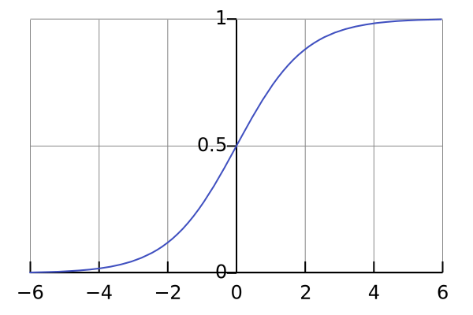

# Deep Learning for Beginners
Notes for "Deep Learning" by Ian Goodfellow, Yoshua Bengio, and Aaron Courville.
## Machine Learning
* Machine learning is a branch of statistics that uses samples to approximate functions.
* We have a true underlying function or distribution that generates data, but we don't know what it is.
* We can sample this function, and these samples form our training data.
* Example image captioning:
* Function: $f^\star(\text{image}) \rightarrow \text{description}$.
* Samples: $\text{data} \in (\text{image}, \text{description})$.
* Note: since there is no correct description, it is not a point, but a distribution in text space: $\text{description} \sim \text{Text}$.
* The goal then, is to find techniques that will:
* Find a good candidate approximation that fits the training data well,
* This solution must also generalize to unseen data as well.
* Machine learning lets us solve problems we don't have a good theory for, or rather machine learning is a meta-theory.
* Possible applications of machine learning:
* Convert inputs into another form - learn "information", extract it and express it. eg: image classification, image captioning.
* Predict the missing or future values of a sequence - learn "causality", and predict it.
* Synthesise similar outputs - learn "structure", and generate it.
## Generalization and Overfitting.
<img src="overfitting.png" style="margin: 0; width: 20em">
* Overfitting is when you find a good model of the training data, but this model doesn't generalize.
* For example: a student who has memorized the answers to the training tests so scores well, but scores badly on the final test.
* There are several tradeoffs:
* Model capacity: weak model cannot model the function but powerful model more prone to overfitting.
* Training iterations: training too little doesn't have enough time to fit the function, training too much gives more time to overfit.
* You need to find a middle ground between a weak model and an overfitted model.
* The standard technique is to do cross validation:
* Set aside "test data" which is never trained upon.
* After all training is complete, we run the model on the final test data.
* You cannot tweak the model after the final test (of course you can gather more data).
* If training the model happens in stages, you need to withhold test data for each stage.
* Deep learning is one branch of machine learning techniques. It is a powerful model that has also been successful at generalizing.
## Feedforward Networks
Feedforward networks represents $y = f^\star(x)$ with a function family:
$$ u = f(x; \theta) $$
* $\theta$ are the model parameters. This could be thousands or millions of parameters $\theta_1 \ldots \theta_T$.
* $f$ is a family of functions. $f(x; \theta)$ is a single function of $x$. $u$ is the output of the model.
* You can imagine if you chose a sufficiently general family of functions, chances are, one of them will resemble $f^\star$.
* For example: let the parameters represent a matrix and a vector:
$f(\vec{x}; \theta)() = \begin{bmatrix}\theta_0 & \theta_1 \\\\ \theta_2 & \theta_3\end{bmatrix} \vec{x} + \begin{bmatrix}\theta_4 \\\\ \theta_5 \end{bmatrix}$
## Designing the Output Layer.
The most common output layer is:
$$f(x; M, b) = g(Mx+b)$$
* The parameters in $\theta$ are used as $M$ and $b$.
* The linear part $Mx+b$ ensures that your output depends on all inputs.
* The nonlinear part $g(x)$ allows you to fit the distributon of $y$.
* For example for input of photos, the output distribution could be:
* Linear: $y \in \mathbb{R}$. eg cuteness of the photo
* Sigmoid: $y \in [0, 1]$. eg probability its a cat
* Softmax: $y \in \mathbb{R}^C$ and $\sum y = 1$. eg. probability its one of $C$ breeds of cats
* To ensure $g(x)$ fits the distribution, you can use:
* Linear: $g(x) = x$.
* Sigmoid: $g(x) = \frac{1}{1+e^x}$.

* Softmax: $g(x)_c = \frac{e^{x_c}}{\sum_i e^{x_i}}$.
* Softmax is actually under-constrained, and often $x_0$ is set to 1. In this case sigmoid is just softmax in 2 variables.
* There is theory behind why these $g$'s are good choices, but there are many different choices.
## Finding $\theta$
Find $\theta$ by solving the following optimization problem for $J$ the cost function:
$$ \min_{\theta \in \text{models}} J\big( y, f(x; \theta) \big) $$
* Deep learning is successful because there is a good family of algorithms to calculate $\min$.
* That algorithms are all variations of gradient descent:
```
theta = initial_random_values()
loop {
xs = fetch_inputs()
ys = fetch_outputs()
us = model(theta)(xs)
cost = J(ys, us)
if cost < threshold: exit;
theta = theta - gradient(cost)
}
```
* Intuitively, at every theta you chose the direction that reduces the cost the most.
* This requires you to compute the gradient $\frac{d\text{cost}}{d\theta_t}$.
* You don't want the gradient to be near $0$ because you learn too slowly or near $\inf$ because it is not stable.
* This is a greedy algorithm, and thus might converge but into a local minimum.
## Chosing the Cost Function
* This cost function could be anything:
* Sum of absolute errors: $J = \sum|y - u|$.
* Sum of square errors: $J = \sum(y - u)^2$.
* One good idea is that $u$ represents the parameters of the distribution of $y$.
* Rationale: often natural processes are fuzzy, and any input might have a range of outputs.
* This approach also gives a smooth measure of how accurate we are.
* The maximum likelihood principle says that: $\theta\_\text{most likely} = \arg\max_\theta p(y; u)$
* Thus we want to minimize: $J = -p(y; u)$
* For $i$ samples: $J = -\prod_i p(y_i; u)$
* Taking log both sides: $J' = -\sum_i \log p(y_i; u)$.
* This is called cross-entropy.
* Applying the idea for: $y \sim \text{Gaussian}(\text{center}=u)$:
* $p(y; u) = e^{-(y-u)^2}.$
* $J = -\sum \log e^{-(y-u)^2} = \sum(y-u)^2$
* This motivates sum of squares as a good choice.
## Regularization
* Regularization techniques are methods that attempt to reduce generalization error.
* It is not meant to improve the training error.
* Prefer smaller $\theta$ values:
* By adding some function of $\theta$ into $J$ we can encourage small parameters.
* $L^2$: $J' = J + \sum |\theta|^2$
* $L^1$: $J' = J + \sum |\theta|$
* $L^0$ is not smooth.
* Note for $\theta \rightarrow Mx+b$ usually only $M$ is added.
* Data augmentation:
* Having more examples reduces overfitting.
* Also consider generating valid new data from existing data.
* Rotation, stretch existing images to make new images.
* Injecting small noise into $x$, into layers, into parameters.
* Multi-Task learning:
* Share a layer between several different tasks.
* The layer is forced to chose useful features that is relevant to a general set of tasks.
* Early stopping:
* Keep a test data set, called the validation set, that is never trained on
* Stop training when the cost on the validation set stops decreasing.
* You need an extra test set to truly judge the the final.
* Parameter sharing:
* If you know invariants about your data, encode that into your parameter choice.
* For example: images are translationally invariant, so each small patch should have the same parameters.
* Dropout:
* Randomly turn off some neurons in the layer.
* Neurons learn to not take input data for granted.
* Adversarial:
* Try to make the points near training points constant, by generating adversarial data near these points.
## Deep Feedforward Networks
Deep feedforward networks instead use:
$$ u = f(x, \theta) = f^N(\ldots f^1(x; \theta^1) \ldots; \theta^N) $$
* This model has $N$ layers.
* $f^1 \ldots f^{N-1}$: hidden layers.
* $f^N$: output layer.
* A deep model sounds like a bad idea because it needs more parameters.
* In practise, it actually needs fewer parameters, and the models perform better (why?).
* One possible reason is that each layer learns higher and higher level features of the data.
## Designing Hidden Layers.
The most common hidden layer is:
$$f^n(x) = g(Mx+b)$$
* The hidden layers have the same structure as the output layer.
* However the $g(x)$ which work well for the output layer don't work well for the hidden layers.
* The simplest and most successful $g$ is the rectified linear unit (ReLU): $g(x) = \max(0, x)$.
* Compared to sigmoid, the gradients of ReLU does not approach zero when x is very big.
* Other common non-linear functions include:
* Modulated ReLU: $g(x) = \max(0, x) + \alpha\min(0, x)$.
* Where alpha is -1, very small, or a model parameter itself.
* The intuition is that this function has a slope for x &lt; 0.
* In practise there is no absolute winner between this and ReLU.
* Maxout: $g(x)\_i = \max_{j \in G(i)} x_j$
* $G$ partitions the range $[1 .. I]$ into subsets $[1 .. m], [m+1 .. 2m], [I-m .. I]$.
* For comparison ReLU is $\mathbb{R}^n \rightarrow \mathbb{R}^n$, and maxout is $\mathbb{R}^n \rightarrow \mathbb{R}^\frac{n}{m}$.
* It is the max of each bundle of $m$ inputs, think of it as $m$ piecewise linear sections.
* Linear: $g(x) = x$
* After multiplying with the next layer up, it is equivalent to: $f^n(x) = g'(NMx+b')$
* It's useful because you can use use narrow $N$ and $M$, which has less parameters.
## Optimizaton Methods
* Minibatch - TODO
* Why is it stochastic?? - TODO
* There are many ways to do gradient descent (using: gradient $g$, learning rate $\epsilon$, gradient update $\Delta$)
* Gradient descent - use gradient: $\Delta = \epsilon g$.
* Momentum - use exponential decayed gradient: $\Delta = \epsilon \sum e^{-t} g_t$.
* Adaptive learning rate where $\epsilon = \epsilon_t$:
* AdaGrad - slow learning on gradient magnitude: $\epsilon_t = \frac{\epsilon}{\delta + \sqrt{\sum g_t^2}}$.
* RMSProp - slow learning on exponentially decayed gradient magnitude: $\epsilon_t = \frac{\epsilon}{\sqrt{\delta + \sum e^{-t} g_t^2}}$.
* Adam - complicated.
* Newton's method: it's hard to apply due to technical reasons.
## Simplifying the Network
* At this point, we have enough basis to design and optimize deep networks.
* However, these models are very general and large.
* If your network has $N$ layers each with $S$ inputs/outputs, the parameter space is $|\theta| = O(NS^2)$.
* This has two downsides: overfitting, and longer training time.
* There are many methods to reduce parameter space:
* Find symmetries in the problem and chose layers that are invariant about the symmetry.
* Create layers with lower output dimensionality, the network must summarize information into a more compact representation.
## Convolution Networks
A convolutional network simplifies some layers by using convolution instead of matrix multiply (denoted with a star):
$$ f^n(x) = g(\theta^n \ast x) $$
* It is used for data that is spatially distributed, and works for 1d, 2d and 3d data.
* 1d: $(\theta \ast x)\_i = \sum\_a \theta\_a x\_{i+a}$
* 2d: $(\theta \ast x)\_{ij} = \sum\_a \sum\_b \theta\_{ab} x\_{ab+ij}$
* It's slightly from the mathematical definition, but has the same idea: the output at each point is a weighted sum of nearby points.
* Benefits:
* Captures the notion of locality, if $\theta$ is zero, except in a window $w$ wide near $i=0$.
* Captures the notion of translation invariance, as the same $\theta$ are used for each point.
* Reduces the number of model parameters from $O(S^2)$, to $O(w^2)$.
* If there are $n$ layers of convolution, one base value will be able to influence the outputs in a $wn$ radius.
* Practical considerations:
* Pad the edges with 0, and how far to pad.
* Tiled convolutions (you rotate between different convolutions).
## Pooling
A common layer used in unison with convnets is max pooling:
$$ f^n(x)\_i = \max\_{j \in G(i)} x_j $$
* It is the same structure as maxout, and equivalent in 1d.
* For higher dimensions $G$ partitions the input space into tiles.
* This reduces the size of the input data, and can be considered as collapsing a local region of the inputs into a summary.
* It is also invariant to small translations.
## Recurrent Networks
Recurrent networks use previous outputs as inputs:
$$ s^{(t)} = f(s^{(t-1)}; \theta) $$
* The state $s$ contains a summary of the past.
* It is a simpler than a fully dynamic model: $s^{(t)} = d^{(t)}(x^{(t)}, ... x^{(1)}; \theta')$
* All the $\theta$'s are shared across time - the recurrent network is invariant across time.
* The recurrent network can learn for any length, while we need to train a different $g$ for each length of input.
* There may be time varying inputs $x$: $s^{(t)} = f(s^{(t-1)}, x^{(t)}; \theta)$.
* If there is output at each step, it can either be $s$, or $o(s)$ where $o$ is the output transformation.
* If output is $s$, the model is less powerful as there is no internal state.
* However, it is easier to train: we have expected output data.
* If output is $o(s)$, the model hides the state so it is harder to train.
* There are many variants of RNN that explicitly model features to:
* Avoid vanishing gradients.
* Provide a prior on how the model learns.
* Long short-term memory (LSTM) extends recurrent networks by explicitly modelling input, output and forgetting:
$s^{(t)} = o\_t(f\_t s^{(t-1)} + i\_t f(s^{(t-1)}, x^{(t)}; \theta))$
* $o_t$ is probability of output, $f_t$ is probability of forgetting, $i_t$ is probability of input, and are layers themselves.
* Gated recurrent unit (GRU) are a simpler model:
$s^{(t)} = (1-z\_t)s^{(t-1)} + z\_tf(f_ts^{(t-1)}, x^{(t)}; \theta)$
* $z_t$ is probability of overwrite, $f_t$ is probability of forgetting.
* When dropout is applied to $s$ it is like losing information, when applied to $f(s, x; \theta)$, it is like not storing information.
## Placeholder to stop page drift
<div style="height: 5000px"></div>